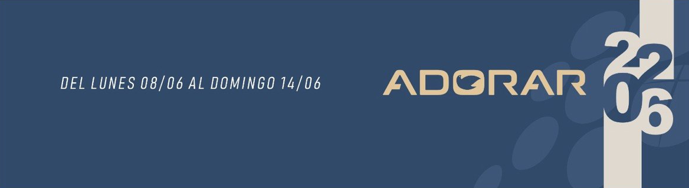

| Hora | Actividad | C | NC | Responsable | Observación |
|---|---|---|---|---|---|
| 7:15 a.m. | Abrir la puerta del salón principal. | ||||
| 7:20 a.m. | Encender los equipos de aire acondicionado. | ||||
| 7:20 a.m. | Verificar que las sillas estén ordenadas. | ||||
| 7:25 a.m. | Verificar ambientación (luces, decoración) y limpieza. | ||||
| 7:25 a.m. | Verificar llegada de sonidista y encargado de multimedia. | ||||
| 7:25 a.m. | Encender las pantallas. | ||||
| 7:15 a.m. | Colocar ambiente musical. | ||||
| 7:15 a.m. | Director de alabanza, músicos y coro presentes. | ||||
| 7:20 a.m. | Revisar parrilla de anuncios y letras de canciones. | ||||
| 7:20 a.m. | Verificar llegada de los servidores / ujieres. | ||||
| 7:20 a.m. | Verificar alguna actividad extra a incluir en el programa. | ||||
| 7:20 a.m. | Colocar 5 minutos el video contador-anuncios. | ||||
| 7:25 a.m. | Alabanza en el escenario (2 min antes del inicio). | ||||
| 7:43 a.m. | Confirmar pastor de guardia y llegada del predicador. | ||||
| 7:43 a.m. | Verificar llegada del predicador y revisar bosquejo. | ||||
| 7:43 a.m. | Verificar las llaves de la oficina para conteo de ofrendas. | ||||
| 7:43 a.m. | Verificar entrega de las hojas de peticiones de oración. | ||||
| 7:15 a.m. | Inicio del Servicio | ||||
| Durante | Monitorear que el programa transcurra según lo planeado. | ||||
| 🔒 BLOQUE DE CIERRE DEL SERVICIO | |||||
| 9:15 a.m. | Recolectar sobres de diezmos, ofrendas y peticiones. | ||||
| 9:20 a.m. | Realizar conteo físico de asistencia (Hombres/Mujeres/Niños). | ||||
| 9:20 a.m. | Despejar pasillos y ordenar sillas para el próximo culto. | ||||
| 9:25 a.m. | Entrega de guardia al equipo del servicio de las 9:45 AM. | ||||
| Hora | Actividad | C | NC | Responsable | Observación |
|---|---|---|---|---|---|
| 9:15 a.m. | Abrir puertas del salón y verificar orden post-servicio. | ||||
| 9:20 a.m. | Verificar que los equipos de aire acondicionado sigan óptimos. | ||||
| 9:20 a.m. | Revisar acomodo de sillas rápidas para nuevo flujo. | ||||
| 9:25 a.m. | Verificar relevo o continuidad de sonidista y multimedia. | ||||
| 9:25 a.m. | Verificar pantallas con material del segundo turno. | ||||
| 9:15 a.m. | Colocar ambiente musical de transición. | ||||
| 9:15 a.m. | Director de alabanza, músicos y coro de las 10AM presentes. | ||||
| 9:20 a.m. | Revisar parrilla de anuncios específica de este servicio. | ||||
| 9:20 a.m. | Verificar llegada de los servidores del 2do turno. | ||||
| 9:20 a.m. | Verificar actividades extras específicas para este horario. | ||||
| 9:20 a.m. | Colocar 5 minutos el video contador-anuncios. | ||||
| 9:25 a.m. | Alabanza del 2do turno en posiciones en el escenario. | ||||
| 9:43 a.m. | Confirmar pastor de guardia de las 10AM y predicador. | ||||
| 9:43 a.m. | Verificar bosquejo o recursos del predicador en pantallas. | ||||
| 9:43 a.m. | Custodiar llaves de la oficina para el conteo de ofrendas. | ||||
| 9:43 a.m. | Verificar entrega de hojas de peticiones de oración nuevas. | ||||
| 9:15 a.m. | Inicio del Servicio | ||||
| Durante | Monitorear que el programa transcurra según lo planeado. | ||||
| 🔒 BLOQUE DE CIERRE DEL SERVICIO | |||||
| 11:15 a.m. | Recolectar sobres de diezmos, ofrendas y peticiones. | ||||
| 11:20 a.m. | Realizar conteo físico de asistencia (Hombres/Mujeres/Niños). | ||||
| 11:20 a.m. | Despejar pasillos y ordenar sillas para el próximo culto. | ||||
| 11:25 a.m. | Entrega de guardia al equipo del servicio de las 11:45 AM. | ||||
| Hora | Actividad | C | NC | Responsable | Observación |
|---|---|---|---|---|---|
| 11:15 a.m. | Verificar orden general del salón y retiro de basura rápida. | ||||
| 11:20 a.m. | Ajustar temperatura de aires acondicionados si es necesario. | ||||
| 11:20 a.m. | Revisar alineación final de las líneas de sillas. | ||||
| 11:25 a.m. | Verificar relevo o continuidad de sonidista y multimedia. | ||||
| 11:25 a.m. | Reiniciar pantallas o verificar listas de reproducción. | ||||
| 11:15 a.m. | Colocar ambiente musical de transición. | ||||
| 11:15 a.m. | Director de alabanza, músicos y coro del 3er turno presentes. | ||||
| 11:20 a.m. | Revisar parrilla de anuncios o cambios de última hora. | ||||
| 11:20 a.m. | Verificar llegada de los servidores del 3er turno. | ||||
| 11:20 a.m. | Verificar si hay bautizos, presentaciones u otra actividad. | ||||
| 11:20 a.m. | Colocar 5 minutos el video contador-anuncios. | ||||
| 11:25 a.m. | Alabanza del 3er turno lista en el escenario. | ||||
| 11:43 a.m. | Confirmar pastor de guardia de las 12PM y predicador. | ||||
| 11:43 a.m. | Verificar bosquejo del predicador en proyección. | ||||
| 11:43 a.m. | Asegurar llaves de la oficina para conteo de ofrendas finales. | ||||
| 11:43 a.m. | Recopilar hojas de peticiones de oración de este turno. | ||||
| 11:15 p.m. | Inicio del Servicio | ||||
| Durante | Monitorear que el programa transcurra según lo planeado. | ||||
| 🔒 BLOQUE DE CIERRE DEL ÚLTIMO SERVICIO | |||||
| 1:15 p.m. | Recolectar últimas ofrendas, diezmos e ingresos generales. | ||||
| 1:20 p.m. | Realizar conteo físico de asistencia total del tercer servicio. | ||||
| 1:15 p.m. | Apagar ordenadamente pantallas, consolas de sonido y luces. | ||||
| 1:20 p.m. | Apagar todas las unidades de aire acondicionado. | ||||
| 1:15 p.m. | Inspección final de orden y cierre total de las puertas con llave. | ||||